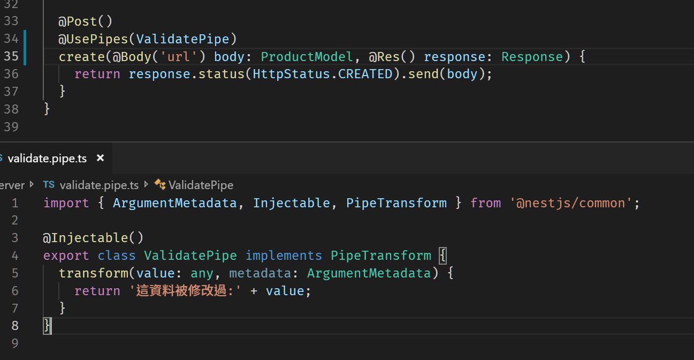

昨天提到 Exception Filter，今天來談談 Pipe，Pipe 在 NestJS 裡面有兩個比較常見的使用情境， 1. 轉型 2. 驗證。至於怎麼完成呢?
根據官網的圖，Pipe 是落在這一個象限內。

而常見的使用情境有
- 轉型 (Transformation)
- 驗證 (Validation)
建立與註冊
CLI 指令
1 | nest g pi <pipe name> |
1 | import { ArgumentMetadata, Injectable, PipeTransform } from '@nestjs/common'; |
是否有一種熟悉的感覺，就跟 Angular 的 Pipe 語法很類似，沒錯，基本上就是類似的運行方式，而註冊方式與註冊 Exception Filter 雷同
1 | ... |
Pipe 詳解
1 | transform(value: any, metadata: ArgumentMetadata) { |
transform 函式內有兩個參數，一個是value 另一個是 metadata，以下為 metadata 的格式
1 | export interface ArgumentMetadata { |
實際取得的資訊如下
重新看一下使用 Pipe 的 Controller
1 | () |
@Body():@Body可設定要從Body取哪一個值，類似 pluck 的功能，而相關的資訊會顯示在 Pipe 的 metadata.data，但必須為文字，如果不傳，metadata 的 data 會收到undefined，- 參數型別，
body: ProductModel，後面的型別會顯示在metatype上, metadata.type會顯示接受到的資料是來自哪裡
既然可以取道完整的資料，就可以做到轉型或是驗證的功能。轉型比較簡單，我們先來看怎麼做
轉型
其實就將要改變的資料回傳回去就可以了

驗證
既然能轉型，就能做到驗證，因為驗證資料格式的方法有很多種，這裡我們就簡單示範一下
執行結果

結論
官方也有提供一些內建的 Pipe 可以直接使用，例如 ValiationPipe 和 ParseIntPipe ，至於詳細的用法，可以參考官方文件 (連結在此)，真的可以花點時間看一下 ValidationPipe 的部分，可以省去不少資料驗證的工作